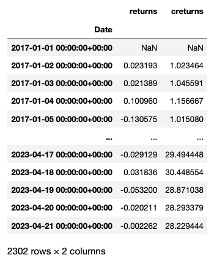
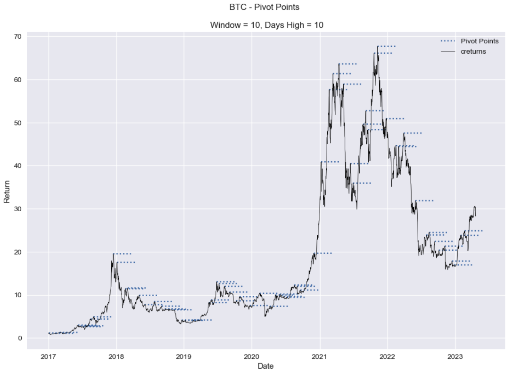
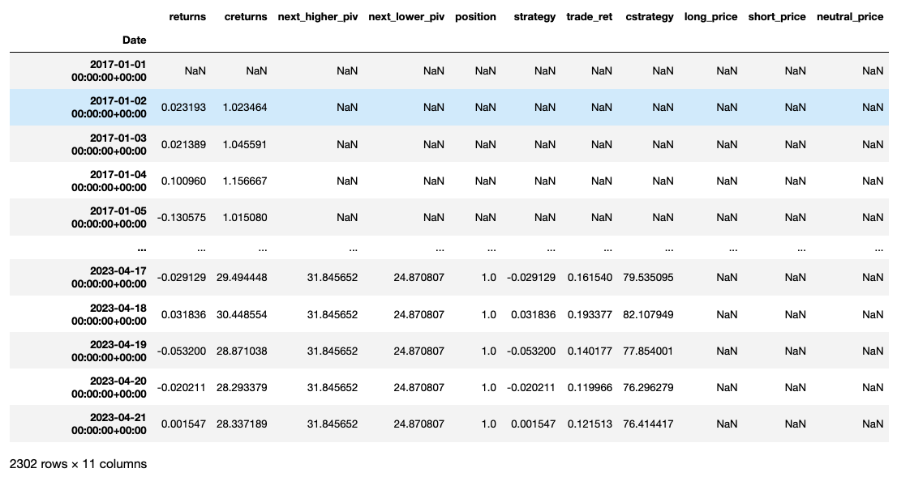
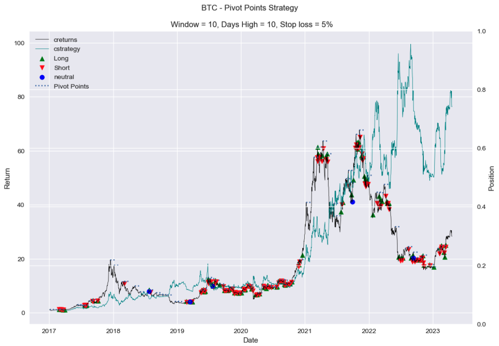
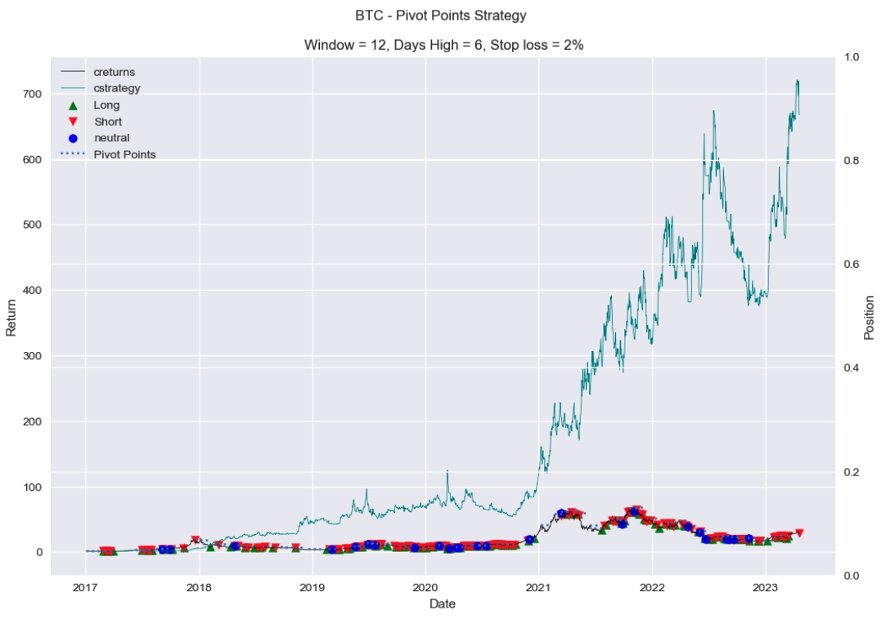

Pivot Point Trading Strategy
Overview
Pivot points are crucial levels on a chart where the price is likely to change direction or reverse. These points are used as potential indicators for identifying trading opportunities. This strategy leverages pivot points to pinpoint optimal entry and exit points for trades, enhancing decision-making. To manage risks effectively, the strategy includes a stop-loss mechanism, which sets a predefined exit point for a trade if the market moves against the expected direction.
Here is the link to the code.
Data Foundation
The strategy utilizes daily Bitcoin data from 2017 to 2023. This extensive dataset provides a solid basis for evaluating the trading strategy under various market conditions, ensuring robustness and adaptability.
Identifying and Visualizing Pivot Points
At the heart of this strategy is the detection of pivot points, determined by the highest closing price within a specified window, such as 10 days. For a price to be considered a pivot point, it must remain the highest closing price for a set duration, like 5 days. This approach allows for the dynamic adjustment of parameters to suit changing market dynamics. Once identified, these pivot points are graphically represented on a chart, clearly marking potential trading signals.
Strategy Formulation
Upon establishing the pivot points, the strategy defines specific rules for entering and exiting trades. A long position is initiated when the price ascends above a pivot point, while a short position is established when it descends below. To ensure the validity of breakouts, a 5% buffer is applied, requiring the price to exceed the pivot point by this margin before executing a trade. Additionally, a stop-loss is implemented to curtail potential losses by exiting the position if the price trends unfavorably.
Performance Visualization
The strategy's effectiveness is illustrated through a comparative chart that contrasts the performance of the pivot point strategy with a simple buy-and-hold approach. This visual comparison underscores the advantages and efficacy of incorporating pivot points into trading strategies.
Optimization of Strategy
To enhance the strategy's performance, an optimization process is undertaken, testing various combinations of parameters-window size, duration for the highest price, and stop-loss levels to determine the most effective settings. The results of this optimization are graphically displayed, highlighting the best-performing configurations and providing insights into how different parameters influence the returns of the strategy.
Key Skills
Python, Data Handling with pandas, Algorithmic Trading Strategy Development, Data Visualization, Performance Analysis, Risk Management, Financial Data Analysis, Technical Analysis